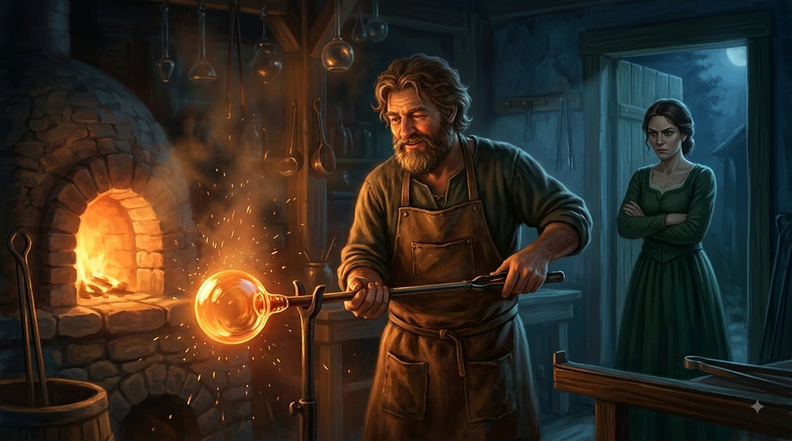
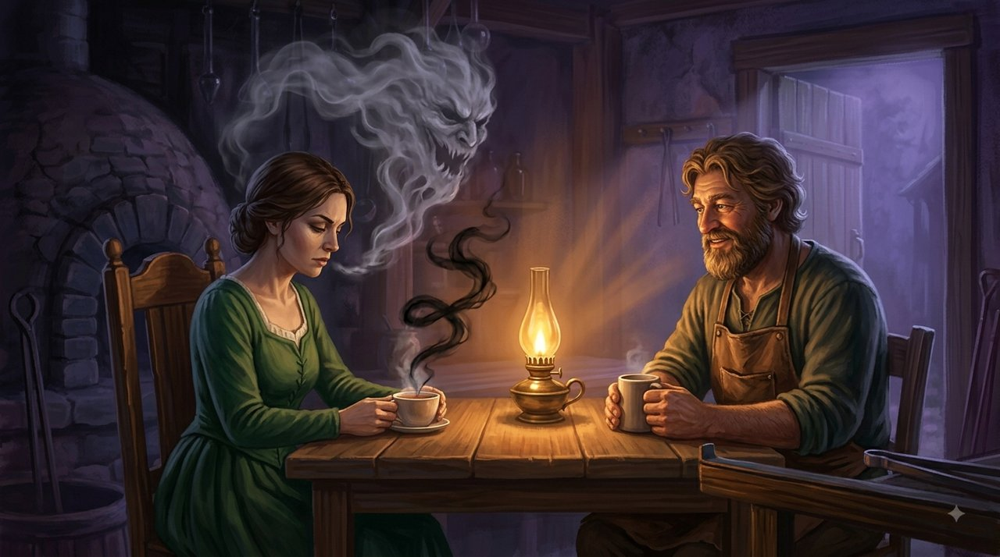
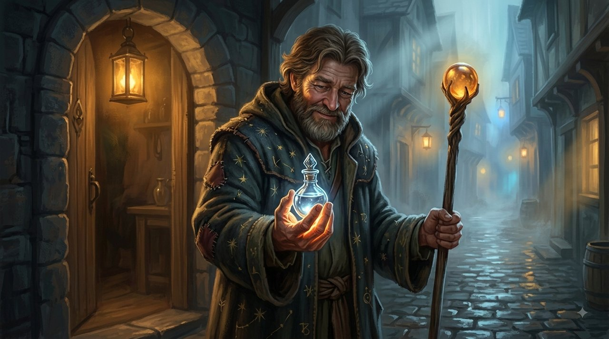
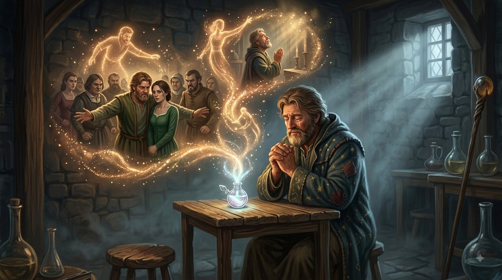
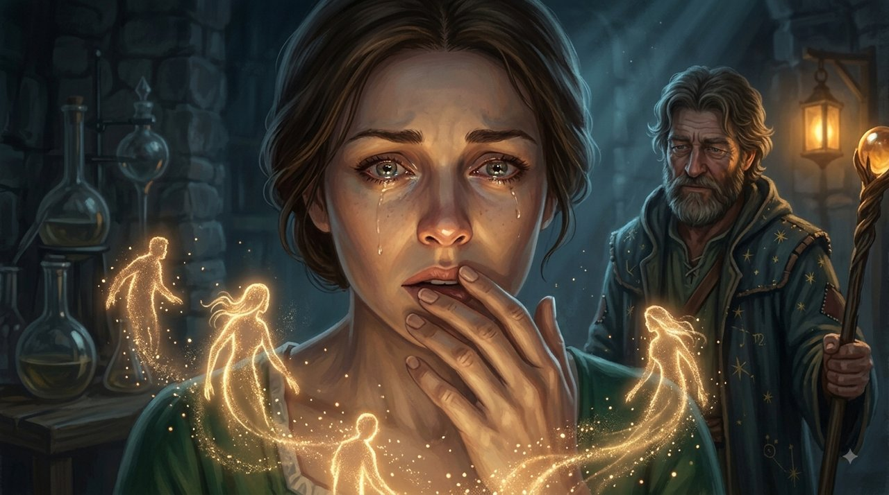

В округе Источников, за Ливанскими горами, жил Дорон, стеклодув кроткого нрава, вместе со своей спутницей Разией. Разия несла в себе давнюю жгучую рану: она верила, что весь мир движим тайными умыслами и что никто не так невинен, каким себя выставляет.

В голове у Разии без остановки работала своего рода переводческая машина, превращавшая всякое движение, взгляд или молчание в умышленную злобу. Когда Дорон возвращался домой уставшим после тяжёлого рабочего дня и глубоко вздыхал, Разия слышала не усталость — она "слышала" вздох презрения. Она тут же бросала ему: "Я точно знаю, что сейчас пронеслось у тебя в голове! Ты вздохнул, потому что я тебе надоела, ты только и ждёшь момента, чтобы сбежать!"
Когда семья Дорона тихо разговаривала в соседней комнате о болезнях и заработке, Разия была совершенно убеждена, что шепчутся о ней, настраивают его против неё и замышляют её унизить. Даже когда Дорон приносил ей чашку горячего чая в дни, когда ей нездоровилось, она видела в этом "пустую любезность" или попытку успокоить нечистую совесть за обиды, которые он якобы готовил ей на будущее.
Дорон снова и снова пытался объяснить, поклясться в чистоте своих намерений, показать свою любовь — но Разия всегда обрывала его одной и той же обжигающей фразой: "Не строй из себя невинного! Я читаю тебя как открытую книгу. Я точно знаю, каковы твои настоящие, уродливые намерения!"
Воды откровения

Однажды в их дом пришёл старый странствующий волшебник, неся зачарованное зелье в серебряном сосуде — "Воды откровения". Разия с надеждой обратилась к волшебнику: "Дай моему мужу выпить это зелье! Я хочу, чтобы все его тёмные и тайные мысли, все заговоры, которые он плетёт против меня со своей семьёй, и всё презрение, что он в себе прячет, всплыли наружу, чтобы все увидели, кто он на самом деле!"
Волшебник тихо улыбнулся и протянул сосуд Дорону. Дорон, не колеблясь, выпил зелье до последней капли.

Вдруг мысли и чувства Дорона начали обретать в воздухе комнаты живые формы из цвета и света. Разия стояла в напряжении, готовая увидеть чудовищ насмешки и предательства. Но явилось нечто совсем иное:
Она увидела фигуру Дорона, идущего по улице и тревожно думающего: "Что бы такое ей купить, чтобы вызвать улыбку на её измученном лице?" Она увидела, как он стоит перед братьями и яростно защищает её, говоря: "Разия чуткая и добрая, вы должны понять, как сильно она страдает, никогда не сердитесь на неё". Она увидела, как он лежит ночью в постели с болью в сердце и молится в тихом плаче: "Если бы она знала, как я её люблю, если бы она перестала видеть во мне врага".
Там не было ни единой мысли о презрении, насмешке или заговоре. Там было лишь море боли, тревоги и, прежде всего, глубокая и верная любовь, изношенная под тяжестью подозрений.

Разия застыла. Её глаза расширились от ужаса — не от того, что она увидела в Дороне, а от того, что она поняла о себе.
Волшебник взглянул на неё и мягко сказал: "Долгие годы, Разия, ты сражалась не с человеком, живущим рядом с тобой. Ты сражалась с чудовищами, которых сама создала в своей голове. Ты превратила свои страхи в пророчества, судила его за преступления, которых он никогда не совершал, и облекла в чёрные намерения самое чистое сердце, что тебе когда-либо протягивали. Тот, кто слушает только свои страхи, всегда 'прочтёт' войну в чужом сердце — даже когда ему протягивают мир".
Разия посмотрела на Дорона, стоявшего перед ней со слезами на глазах, полных сострадания. В это мгновение ядовитая переводческая машина в её голове умолкла.
Чтобы спасти наш мир, мы должны перестать выдумывать чужие мысли — и начать верить любви, которая стоит перед нами наяву.